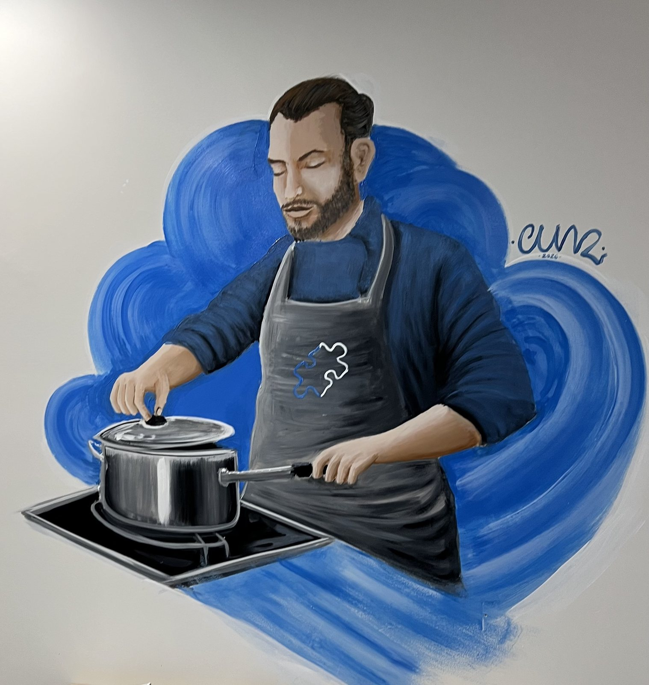
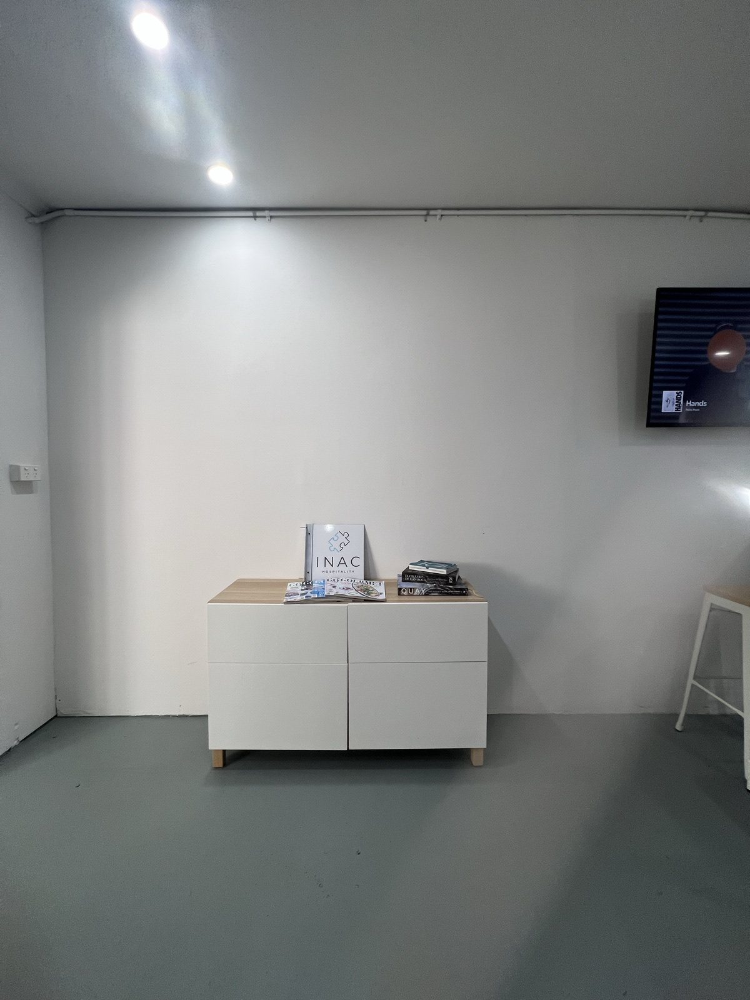
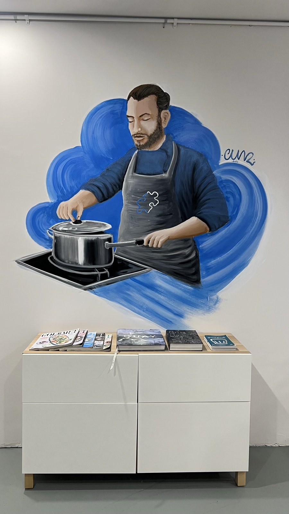
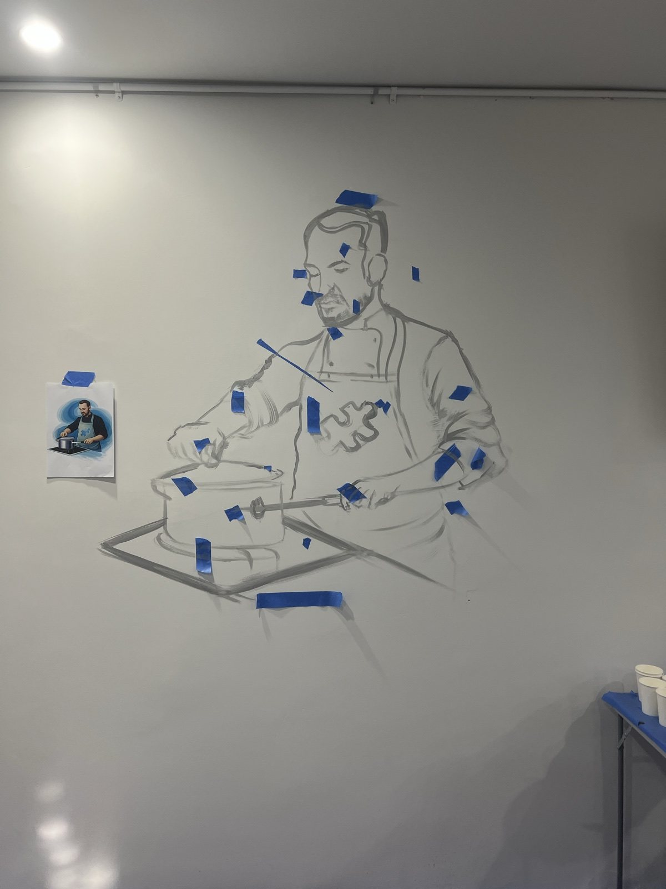
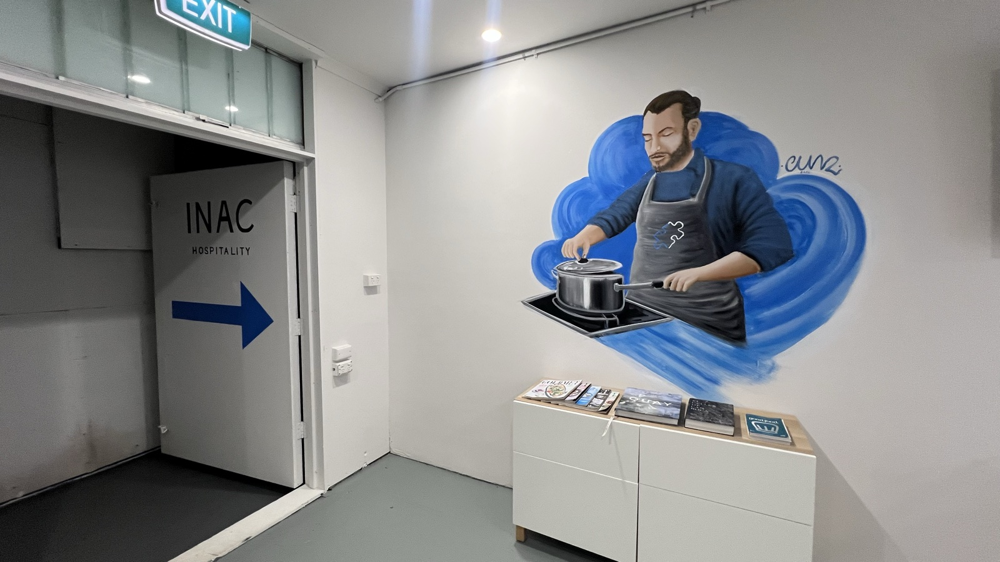

The Chef
Commission WorkInterior Mural

A chef lifting the lid off a pot, painted in cobalt blue and greys on the white wall of the INAC Hospitality office in Broadbeach, on the Gold Coast, Queensland, Australia. The mural measures two by two metres and was commissioned as an interior piece for the workplace, with the company's puzzle piece logo painted onto the chef's apron. The wall was plain white before the mural, and the blue splash behind the figure is what gives it its shape in the room.



